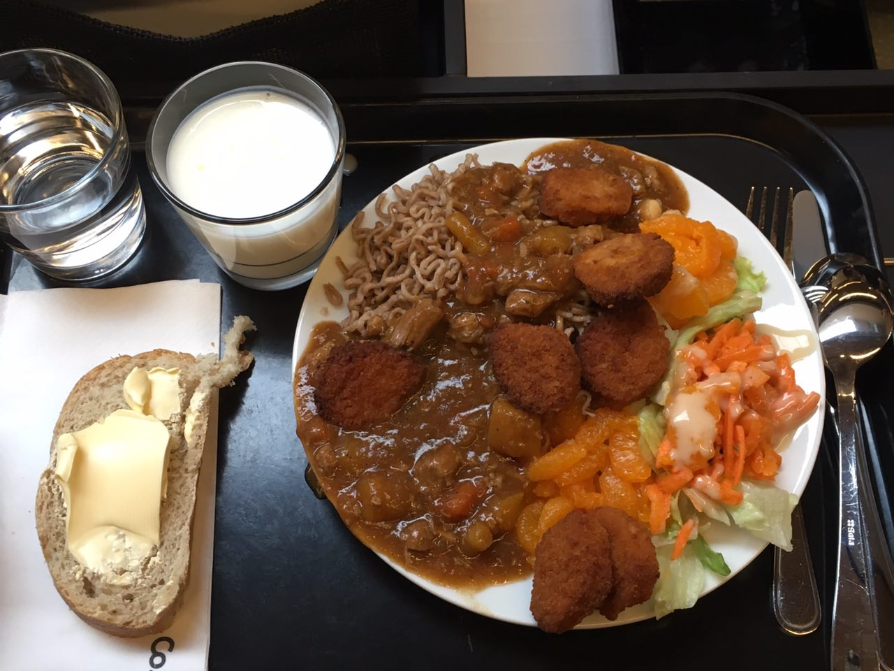

20171115 日記
今天早上六點起來視訊開一個接案的小會議，然後八點到工學院跟船舶工程系的同學一起上課。
講師是 Royal Caribbean International 的資深專案經理，大致上是利用講他們公司怎麼從無到有設計 Ovation of Seas 這艘郵輪，來原則性的說明郵輪設計的過程跟考量。
現在快睡著了，隨便舉個有趣的點，他們公司有不同尺寸等級的遊輪，郵輪因為整理獲利考量跟服務設施的空間需求，有越做越大的趨勢。除了上述考量之外，還有一個叫做 Panamax，顧名思義是巴拿馬運河的寬與深度，會限制該航線上郵輪的尺寸。其他運河也有自己的 -max，比如Suezmax。中國也有自己的 Chinamax喔，但就跟運河沒關係了。以 Panamax 的為例，超過標準的叫做 Post-panamax。
中午吃了很神秘的午餐，學餐菜色變化算很不小，我到現在還是常常吃到問號臉的東西，今天是水煮蕎麥方便麵加上雞塊。不難吃啦，芬蘭食物簡而言之，就是酸甜苦辣拿掉80%，只剩下鹽跟牛奶當作主要的調味。清淡原始。大概在台灣口味清淡又講究均衡的人是頗能接受。
因為是一個盤子吃到飽，大家排隊自取，所以每次都塞得很滿。
下午討論郵輪航程設計。我們五個人裏四個東亞人，因為分組那時剛好坐得近，結果分到一起，只有一個芬蘭人，而這個芬蘭人每天忙著在某家新創工作，對學校很混，就忽略他吧。我們討論出銜接海上與陸地上體驗脫節之處的設計提案。簡而言之，郵輪的航程在陸地上通常是一天的07:00-17:00，旅客在當地玩完回來之後回到船上，恐怕是對當地的夜生活有些遺憾的。另外是海上航程設施與體驗重複的無聊不利回頭客。
不過上面這些問題意識其實不重要，我們也沒有做訪談。這跟上學期的 User Inspired Design 相對強調研究是不同的。因為這門課基本上是要做 Product Architecture，也就是所謂的 Architectural Innovation，比較著重在組織結構與整體服務的整合與創新。
晚上再草草吃過之後回來繼續工作到現在，推掉了本來要跟朋友一起去國家歌劇院看芬蘭建國史詩 Kalevala 的計畫，好難過。
今天收到系秘書的信，說我提出的兩年學習計畫通過審核了，系上會就我計劃中的課程給我優先選課權。但信末尾提到，明年初針對獎學金受獎者，會有個年度審核評估下學年的續領資格，期間我的課程都要被追蹤。
“As you have been given the scholarship that covers your study fees for two years, we have to see that your graduation is possible in these two years. Also we are asked to follow the progress of your studies. To be able to get the scholarship for the second year demands that your studies are progressing well and that you will gain the demanded credits of the first MA year. We have to give our statement to the school administration around February 2018.”
之前怎都沒說。而且連改變修課內容都要報備，覺得壓力大。